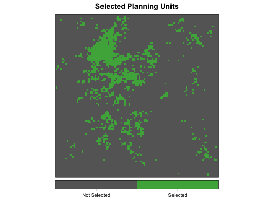
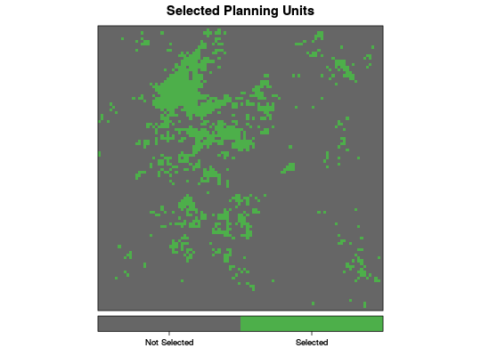
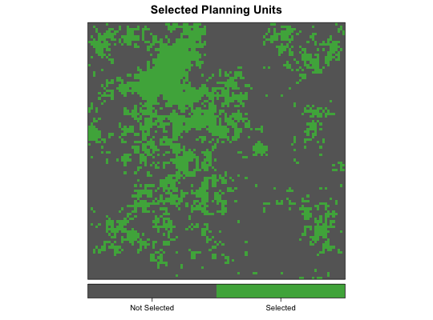
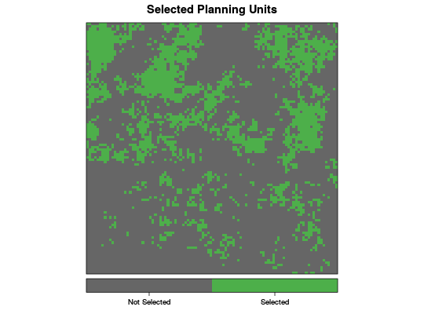

Solve a systematic conservation planning problem using the the methods of
Integer Linear Programming (ILP). In particular, this function solves either
the the minimum set cover problem or the maximum coverage problem for
systematic reserve design. In addition, this function provides a unified
interface to a variety of optimization packages and gives the user the
ability to chose which to use based on the availability on their machine.
Choosing a solver is done via the solver argument of the
prioritize() function, or by invoking one of the prioritize_*
functions.
prioritize(pm, solver = c("best", "gurobi", "symphony", "glpk"), gap = 1e-04, time_limit = Inf, first_feasible = FALSE, bound = NA_real_, threads = 0) prioritize_glpk(pm, gap = 1e-04, time_limit = Inf, first_feasible = FALSE, bound = NA_real_) prioritize_gurobi(pm, gap = 1e-04, time_limit = Inf, first_feasible = FALSE, bound = NA_real_, threads = 0) prioritize_symphony(pm, gap = 1e-04, time_limit = Inf, first_feasible = FALSE, bound = NA_real_)
prioritizr_model object specifying the prioritization model
to solve. This will typically be output from one of the corresponding
functions: minsetcover_model or maxcover_model.first_feasible is set to TRUE, the solver will return the
first solution it encounters that meets all the constraints, regardless of
solution quality. Note that the first feasible solution is not an arbitrary
solution, rather it is derived from the relaxed solution, and is therefore
often reasonably close to optimality.A prioritizr_results object containing the solution to the
prioritization problem. This is an S3 object consisting of a list with the
following components:
x: vector of decision variables for the best solution. 1
indicates that a planning unit is selected, 0 that it isn't.
objval: objective function value for optimal solution.
objbound: lower bound on objective function. This is useful
only if the solver was stopped before finding the optimum. If the solver
was run to completion, objbound and objval will be equal.
gap: the relative gap to optimality:
objval / objbound - 1. gap will be zero if the
solver was run to comletion and the true optimum was found.
time: the execution time (in seconds) of the solver.
The prioritizr package currently handles two types of conservation
prioritization problems. Each type of problem has a corresponding
prioritizr_model object that encapsulates the problem and is passed
as the first argument to prioritize():
This problem is equivalent to a simplified Marxan reserve design problem,
with the Bounday Length Modifier (BLM) set to zero. Use
minsetcover_model to construct a minimum set cover model.
This problem is roughly the opposite of what the conservation planning
software Marxan does. Use maxcover_model to construct a
minimum set cover model.
The following optimization packages (and corresponding values for the
solver parameter) are supported. The packages must be installed
independently to function:
gurobi: http://gurobi.com is a
state-of-the-art commercial optimization software with an R package
interface. It is by far the fastest of the solvers available in this
package, however, it is also the only one that isn't free. That said, free
academic licenses are available.
symphony:
https://projects.coin-or.org/SYMPHONY is an open-source
integer programming solver that is part of the Computational Infrastructure
for Operations Research (COIN-OR) project, an initiative to promote
development of open-source tools for operations research (a field that
includes linear programming). Two R packages exist to provide interfaces to
SYMPHONY: Rsymphony (on CRAN) and lpsymphony (on
Bioconductor). On Windows and Mac, lpsymphony may be easier to
install. prioritize() will choose whichever package is available if
solver = "symphony" is used.
glpk: The GNU Linear Programming Kit
(https://www.gnu.org/software/glpk/) is an open-source
package for solving linear and integer linear programs. The R package
glpkAPI provides an interface to the low-level GLPK API.
# raster 100x100 template e <- raster::extent(0, 100, 0, 100) r <- raster::raster(e, nrows = 100, ncols = 100, vals = 1) # generate 9 feature distributions with different scales and range sizes f <- mapply(function(x, y, r) gaussian_field(r = r, range = x, prop = y), rep(c(5, 15, 25), each = 3), rep(c(0.1, 0.25, 0.5), times = 3), MoreArgs = list(r = r)) f <- raster::stack(f) f <- setNames(f, letters[1:raster::nlayers(f)]) # genrate cost layer cost <- gaussian_field(r, 20, mean = 1000, variance = 500) cost <- setNames(cost, "cost") # prepare minimum set cover prioritization model # use 20% targets msc_model <- minsetcover_model(x = cost, features = f, targets = 0.2) # solve to within 1 percent of optimality # pick solver automatically (uses Gurobi if installed) msc_results <- prioritize(msc_model, gap = 0.001)#> Optimize a model with 9 rows, 10000 columns and 25500 nonzeros #> Variable types: 0 continuous, 10000 integer (10000 binary) #> Coefficient statistics: #> Matrix range [1e+00, 1e+00] #> Objective range [9e+02, 1e+03] #> Bounds range [1e+00, 1e+00] #> RHS range [2e+02, 1e+03] #> Found heuristic solution: objective 1.81733e+06 #> Presolve removed 0 rows and 506 columns #> Presolve time: 0.09s #> Presolved: 9 rows, 9494 columns, 25500 nonzeros #> Variable types: 0 continuous, 9494 integer (9494 binary) #> #> Root relaxation: objective 1.095607e+06, 45 iterations, 0.04 seconds #> #> Nodes | Current Node | Objective Bounds | Work #> Expl Unexpl | Obj Depth IntInf | Incumbent BestBd Gap | It/Node Time #> #> 0 0 1095606.74 0 8 1817330.63 1095606.74 39.7% - 0s #> H 0 0 1096349.7912 1095606.74 0.07% - 0s #> #> Explored 0 nodes (45 simplex iterations) in 0.23 seconds #> Thread count was 2 (of 2 available processors) #> #> Solution count 2: 1.09635e+06 1.81733e+06 #> Pool objective bound 1.09561e+06 #> #> Optimal solution found (tolerance 1.00e-03) #> Best objective 1.096349791222e+06, best bound 1.095606738384e+06, gap 0.0678%# specify SYMPHONY solver msc_results_symphony <- prioritize(msc_model, solver = "symphony", gap = 0.001) plot_selection(cost, msc_results_symphony$x)# prepare maximum coverage prioritization model # set budget to 25% of total cost b_25 <- 0.25 * raster::cellStats(cost, "sum") mc_model <- maxcover_model(x = cost, features = f, budget = b_25, targets = 0.5) # solve to within 1 percent of optimality # pick solver automatically (uses Gurobi if installed) mc_results <- prioritize(mc_model, gap = 0.001)#> Optimize a model with 10 rows, 10009 columns and 35509 nonzeros #> Variable types: 0 continuous, 10009 integer (10009 binary) #> Coefficient statistics: #> Matrix range [1e+00, 2e+03] #> Objective range [1e+00, 1e+00] #> Bounds range [1e+00, 1e+00] #> RHS range [2e+06, 2e+06] #> Found heuristic solution: objective -0 #> Presolve removed 0 rows and 506 columns #> Presolve time: 0.08s #> Presolved: 10 rows, 9503 columns, 35003 nonzeros #> Variable types: 0 continuous, 9503 integer (9503 binary) #> #> Root relaxation: objective 7.906133e+00, 59 iterations, 0.04 seconds #> #> Nodes | Current Node | Objective Bounds | Work #> Expl Unexpl | Obj Depth IntInf | Incumbent BestBd Gap | It/Node Time #> #> 0 0 7.90613 0 5 -0.00000 7.90613 - - 0s #> H 0 0 5.0000000 7.90613 58.1% - 0s #> 0 0 7.80505 0 10 5.00000 7.80505 56.1% - 0s #> 0 0 7.77352 0 12 5.00000 7.77352 55.5% - 0s #> 0 0 7.64891 0 13 5.00000 7.64891 53.0% - 1s #> 0 0 7.63365 0 16 5.00000 7.63365 52.7% - 1s #> 0 0 7.61577 0 20 5.00000 7.61577 52.3% - 1s #> 0 0 7.61574 0 22 5.00000 7.61574 52.3% - 2s #> 0 0 7.60305 0 21 5.00000 7.60305 52.1% - 3s #> 0 2 7.60305 0 21 5.00000 7.60305 52.1% - 9s #> 5 5 6.65552 2 10 5.00000 6.65552 33.1% 41.2 10s #> H 28 9 6.0000000 6.07761 1.29% 17.6 10s #> #> Cutting planes: #> Cover: 1 #> MIR: 11 #> #> Explored 34 nodes (980 simplex iterations) in 10.63 seconds #> Thread count was 2 (of 2 available processors) #> #> Solution count 3: 6 5 -0 #> Pool objective bound 6 #> #> Optimal solution found (tolerance 1.00e-03) #> Best objective 6.000000000000e+00, best bound 6.000000000000e+00, gap 0.0000%# specify SYMPHONY solver mc_results_symphony <- prioritize(mc_model, solver = "symphony", gap = 0.001) plot_selection(cost, mc_results_symphony$x)